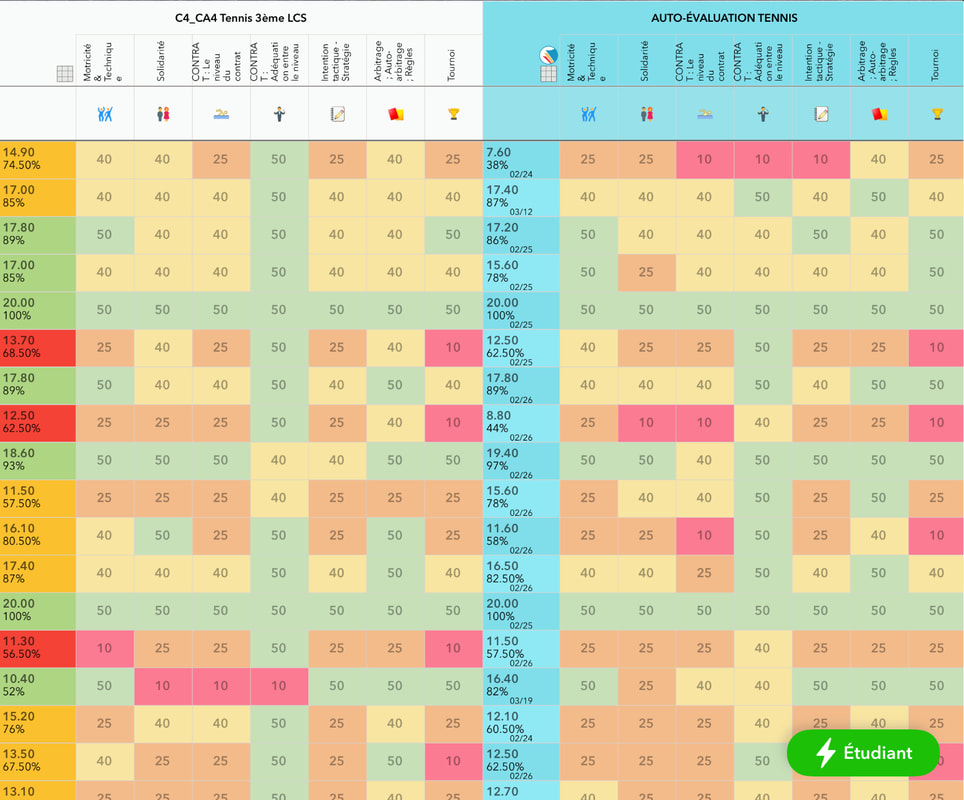
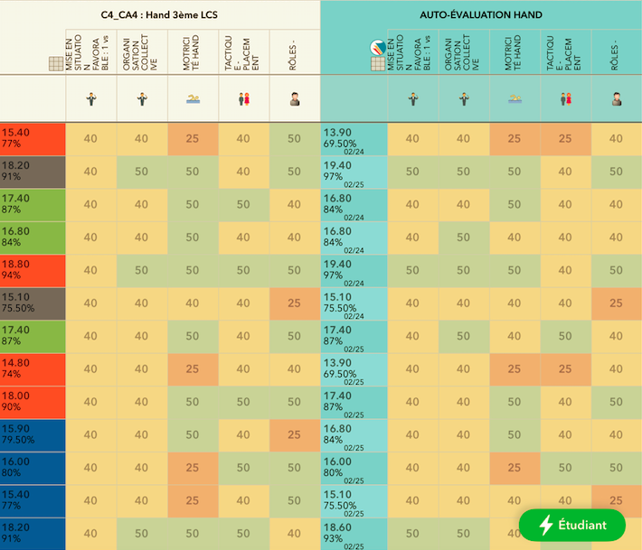
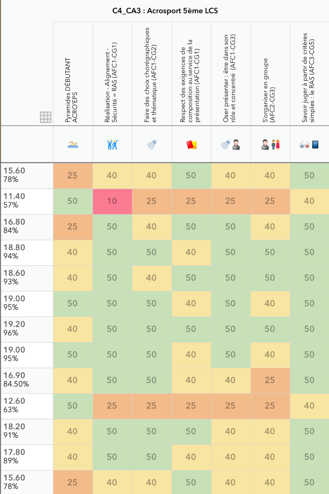

Idoceo
Idoceo
L'application Idoceo ne fonctionne que sous iOS. Cette puissante App est un couteau suisse pour l'enseignant tant ses fonctionnalités sont larges et extrêmement intéressantes dans le travail au quotidien.
En effet, nous pouvons :
En effet, nous pouvons :
- Faire le suivi de plusieurs classes (appel, inaptitude, retard...)
- Faire des annotations sur les apprentissages
- Faire des plans de classe
- Tirer au sort les élèves
- Noter nos élèves de manières diversifiées
- Travailler et évaluer par compétences
- Réaliser des auto-évaluations, un suivi des exercices et des co-évaluations par l'intermédiaire d'idoceo connect
- Créer des questionnaires bien utiles dans le cadre d'une classe inversée
- Et bien d'autres possibilités encore...
Quelques exemples en images



Je vous conseille les excellentes vidéos réalisées par le groupe "Eps et Numérique" de Rouen. Vous trouverez les tutoriels pour Idocéo ici
En voici deux exemples :
En voici deux exemples :